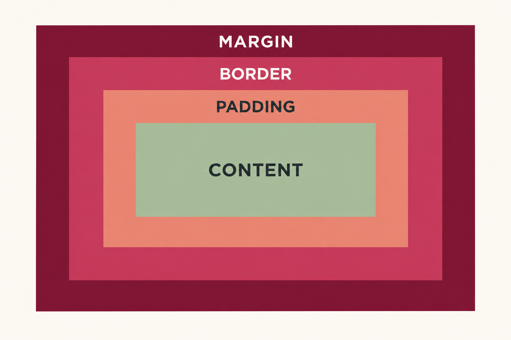

Visão geral
Como uma página web é construída
Uma página pode ser entendida em três camadas. O HTML organiza o conteúdo, o CSS define a aparência e o JavaScript acrescenta regras e comportamentos. Nesta etapa, o foco principal está na estrutura e na apresentação.
Define títulos, parágrafos, links, imagens, listas e seções.
Controla cores, fontes, tamanhos, espaçamentos e organização visual.
Executa cálculos, validações e regras no navegador.
Interpreta os arquivos e apresenta o resultado para a pessoa usuária.
Estrutura
Primeiros passos com HTML
HTML significa HyperText Markup Language. Ele utiliza elementos para indicar a função de cada parte do conteúdo. Uma estrutura básica contém a declaração do documento, a área de configurações e o conteúdo visível.
<!doctype html>
<html lang="pt-BR">
<head>
<meta charset="utf-8">
<meta name="viewport" content="width=device-width, initial-scale=1">
<title>Meu projeto</title>
<link rel="stylesheet" href="style.css">
</head>
<body>
<header><h1>Meu projeto web</h1></header>
<main>
<h2>Sobre</h2>
<p>Esta é a primeira versão da página.</p>
</main>
</body>
</html>Configurações e conteúdo visível
O documento é dividido em duas áreas importantes. O head reúne informações usadas pelo navegador, como codificação de caracteres, título da aba, adaptação para celulares e ligação com o CSS. Esses dados configuram a página, mas não formam o conteúdo principal exibido.
O body contém aquilo que aparece na tela: textos, imagens, links, menus, formulários e as demais partes da interface.
Semântica e organização
Elementos como header, nav, main, section e footer indicam a função de cada região. O main envolve o assunto central da página, enquanto cabeçalho e rodapé organizam informações complementares.
Quando não existe um elemento semântico adequado, a div pode agrupar outros elementos. O atributo class identifica um grupo reutilizável, como vários cartões. Já o atributo id nomeia uma parte específica e única do documento.
<header id="topo">
<h1>Meu portfólio</h1>
</header>
<main>
<article class="cartao">Projeto 1</article>
<article class="cartao">Projeto 2</article>
</main>Apresentação
Estilização com CSS
Uma regra CSS combina seletor, propriedade e valor. O seletor aponta quais elementos receberão o estilo. Dentro das chaves, cada propriedade representa um aspecto visual e o valor define a configuração aplicada.
p alcança todos os parágrafos da página.
.cartao alcança os elementos com class="cartao".
#topo alcança o elemento identificado por id="topo".
color: #642640 reúne uma propriedade e seu valor.
p {
color: #302833;
font-family: Arial, sans-serif;
}
.cartao {
background-color: #ffffff;
padding: 20px;
}
#topo {
margin-bottom: 24px;
}color altera a cor do texto, background-color define a cor de fundo e font-family escolhe a família tipográfica.
Espaçamentos
O modelo de caixa do CSS
O navegador representa cada elemento como uma caixa formada por camadas. Entender essa estrutura ajuda a controlar tamanhos e distâncias sem depender de tentativas aleatórias.

Área ocupada pelo texto, imagem ou outro conteúdo do elemento.
Espaço interno entre o conteúdo e a borda.
Linha que envolve o conteúdo e o espaço interno.
Espaço externo que separa a caixa dos elementos vizinhos.
.cartao {
padding: 20px;
border: 1px solid #d8c9d0;
margin: 16px 0;
}Comportamento
O papel do JavaScript
JavaScript é uma linguagem de programação executada pelo navegador. Neste primeiro contato, basta compreender que ela pode armazenar valores, realizar cálculos e tomar decisões.
const nomeDoCurso = "Desenvolvimento Web Full Stack";
const cargaHoraria = 40;
console.log(nomeDoCurso);
console.log(`Carga horária: ${cargaHoraria} horas`);O resultado de console.log() pode ser observado no console das ferramentas de desenvolvimento do navegador. Para apresentar um aviso simples diretamente na tela, JavaScript também oferece alert("Mensagem").
Exemplo integrado
Da estrutura ao resultado no navegador
Em um projeto organizado, cada tecnologia fica responsável por uma parte. O arquivo index.html guarda o conteúdo e liga os outros arquivos; style.css cuida da aparência; e script.js contém as instruções de programação.
1. Estrutura em index.html
<!doctype html>
<html lang="pt-BR">
<head>
<meta charset="utf-8">
<title>Portfólio de Ana</title>
<link rel="stylesheet" href="style.css">
</head>
<body>
<header id="topo">
<h1>Portfólio de Ana</h1>
</header>
<main>
<article class="cartao">
<h2>Meu primeiro projeto</h2>
<p>Uma página criada com HTML e CSS.</p>
</article>
</main>
<script src="script.js"></script>
</body>
</html>As tags formam uma hierarquia: html envolve o documento, head reúne configurações e body reúne o conteúdo visível. Dentro do corpo, o cabeçalho identifica a página e o main contém seu assunto principal.
Em class="cartao", class é o nome do atributo e cartao é seu valor. A classe pode ser repetida em vários projetos. O id="topo" identifica somente aquele cabeçalho.
2. Aparência em style.css
body {
font-family: Arial, sans-serif;
background-color: #f7f3f5;
}
#topo {
color: #642640;
}
.cartao {
background-color: white;
padding: 20px;
border: 1px solid #d8c9d0;
margin: 24px 0;
}O navegador procura os elementos indicados pelos seletores e aplica as declarações. O seletor body usa o nome da tag, #topo usa o sinal de cerquilha para localizar um ID e .cartao usa o ponto para localizar uma classe.
No cartão, o padding afasta o texto da borda por dentro. A border desenha o contorno e a margin cria distância entre o cartão e os elementos ao redor.
3. Instrução em script.js
const projeto = "Meu primeiro projeto";
console.log(`Página carregada: ${projeto}`);A constante guarda um texto e console.log() envia uma mensagem ao console do navegador. Ela é útil para acompanhar valores e entender o que o programa executou, sem inserir a mensagem no conteúdo da página.
head, mostra o conteúdo do body com os estilos aplicados e executa o arquivo JavaScript indicado no final.Síntese
Revise o que você aprendeu
Antes de seguir para a atividade, confira se você consegue explicar os pontos abaixo com suas próprias palavras. Volte ao exemplo integrado quando precisar comparar um conceito com sua aplicação no código.
Diferencie estrutura, apresentação e comportamento em uma página web.
Reconheça as funções de head, body e main.
Decida quando uma marcação deve usar uma classe reutilizável ou um ID único.
Localize seletor, propriedade e valor em uma declaração de estilo.
Distinga o espaço interno do elemento do espaço que o separa dos vizinhos.
Entenda onde aparece uma mensagem enviada por console.log().
Prática sugerida
Crie a página inicial do projeto
- Crie uma pasta com os arquivos
index.html,style.cssescript.js. - Adicione cabeçalho, navegação, conteúdo principal e rodapé usando elementos adequados.
- Apresente o nome, o objetivo e as principais funções do projeto.
- Use uma classe em elementos que compartilham o mesmo visual e um ID em uma região única.
- Defina cores, tipografia, largura máxima,
padding, borda emargin. - Crie uma variável no JavaScript e mostre seu valor no console.
- Abra a página em tamanhos diferentes e verifique a leitura.
Critérios para conferir sua página
A atividade estará bem encaminhada quando o conteúdo aparecer organizado, o CSS estiver em um arquivo separado, os espaçamentos internos e externos forem perceptíveis e o console exibir a mensagem do JavaScript sem erros.